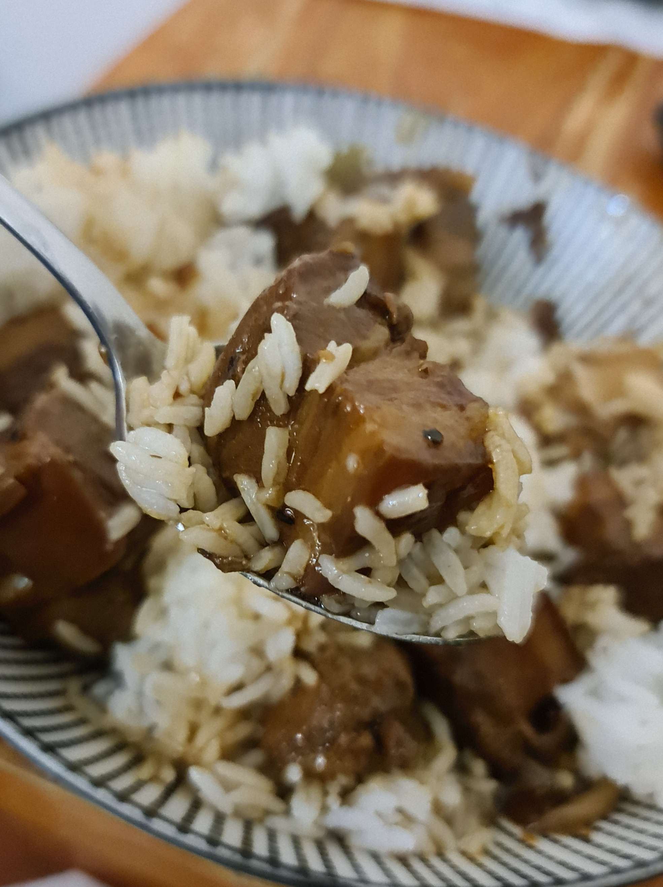
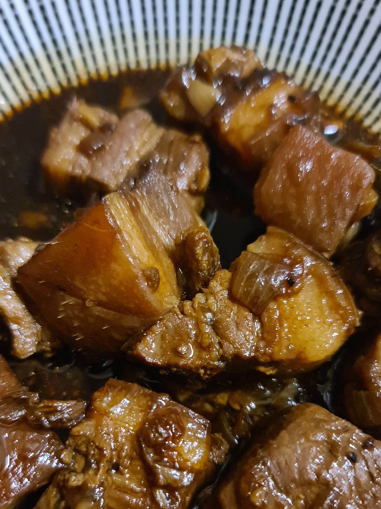
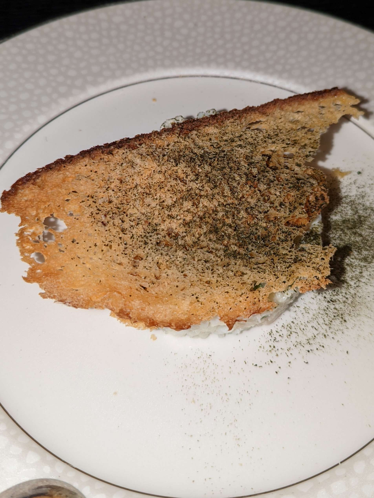
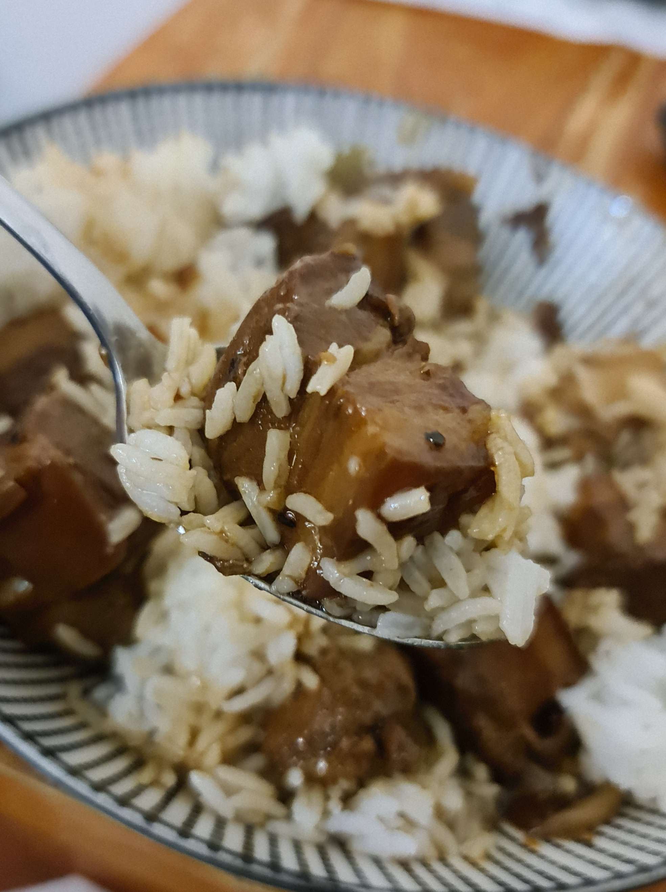
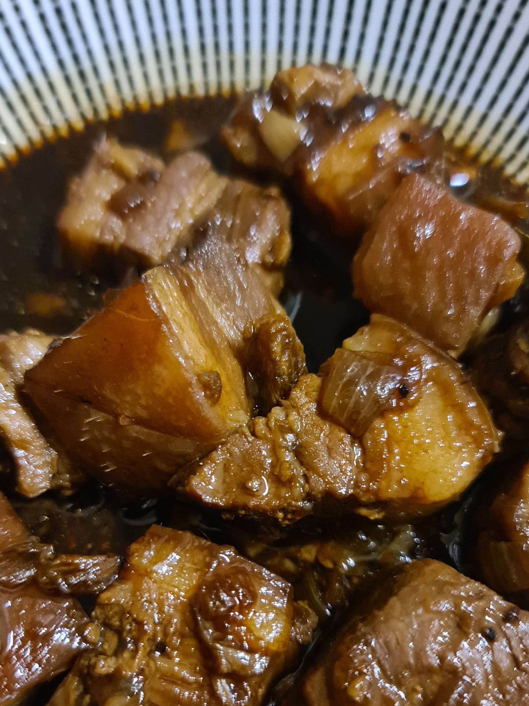
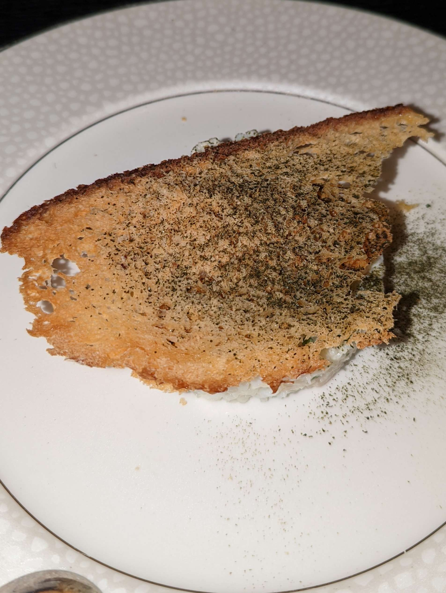
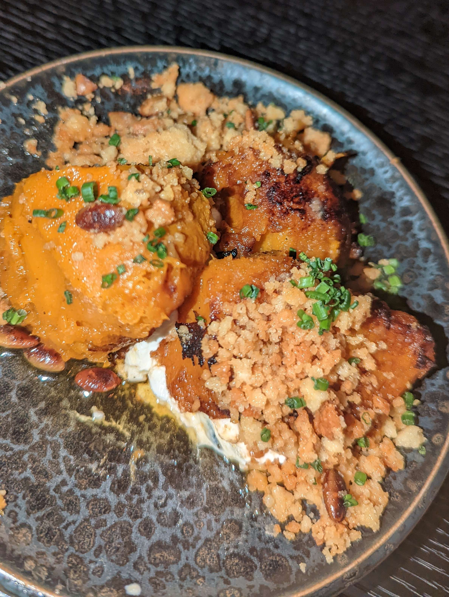
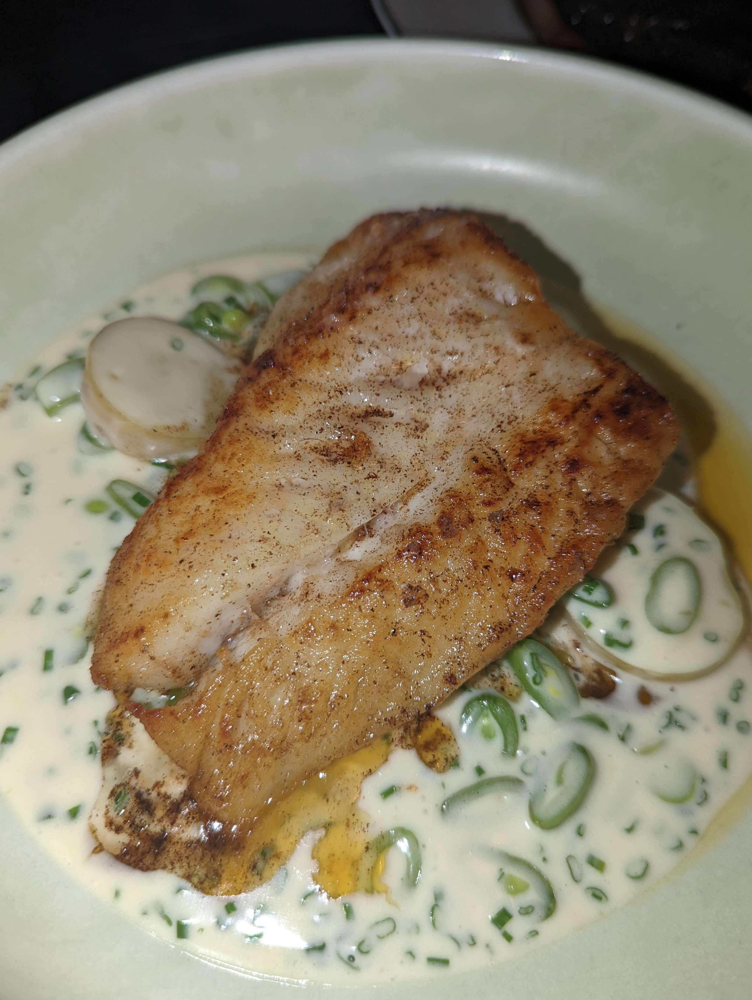
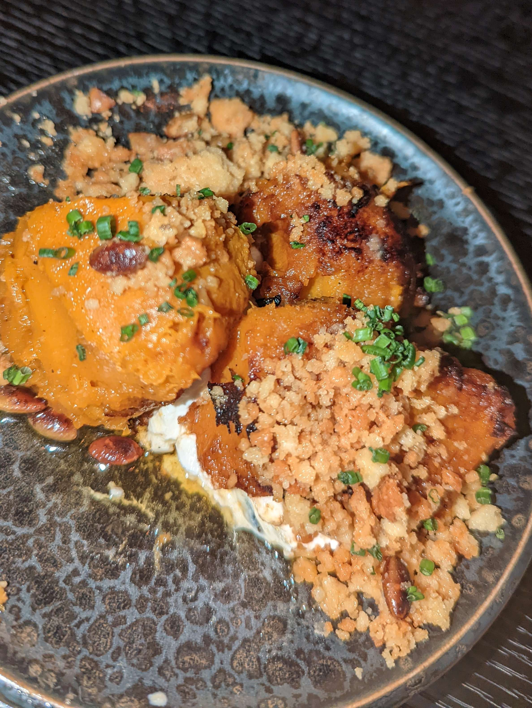
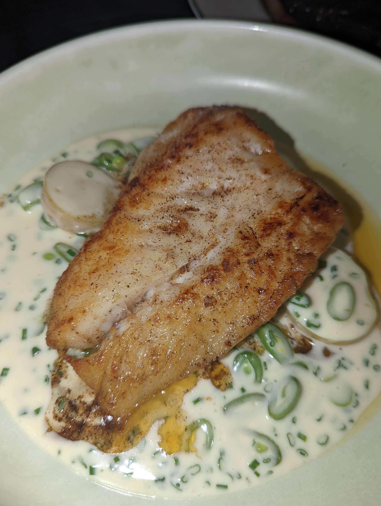

alt text
As with most websites, we use cookies to remember you, your preferences and to create a better, more personalised experience. By accepting our cookies we can remember your preferences and you are able to view the embeded youtube videos.


 






 


